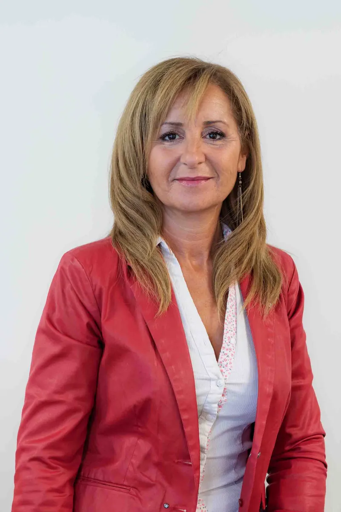
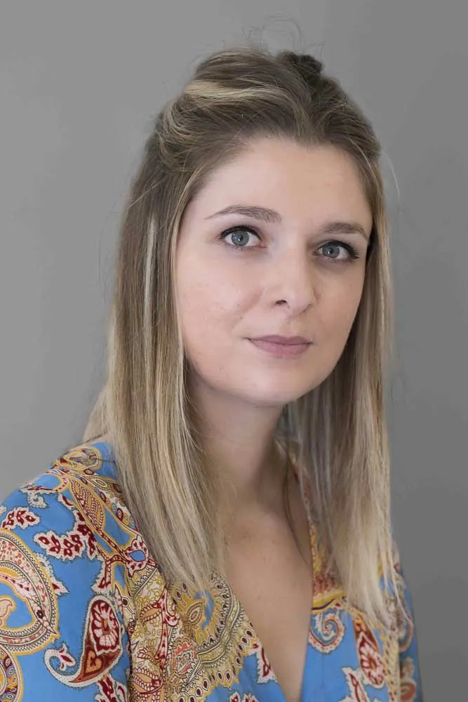
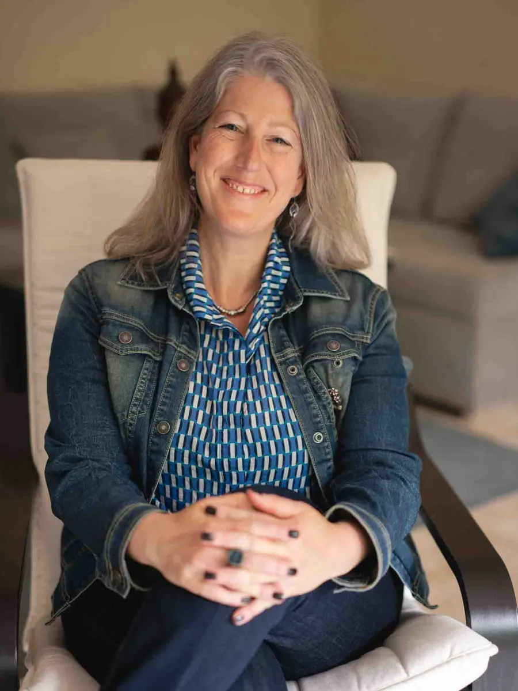
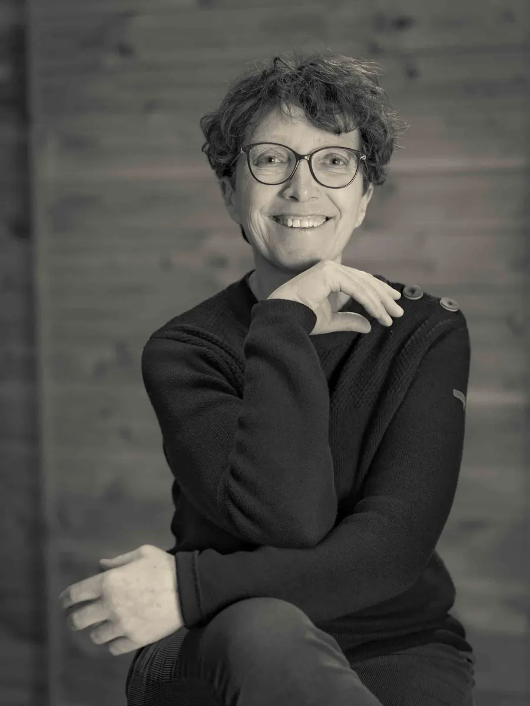

Le journal · Entreprise ·
Photo professionnelle pour CV : comment capter l’attention des recruteurs à Montpellier
Découvrez comment un portrait professionnel soigné peut renforcer votre image sur votre CV et faire la différence auprès des recruteurs à Montpellier.

Découvrez pourquoi un portrait professionnel soigné peut faire toute la différence sur votre CV et renforcer l’impact de votre candidature auprès des recruteurs.
Pourquoi ajouter une photo professionnelle à son CV ?
Dans un monde de plus en plus visuel, l’impact d’une photo professionnelle sur un CV est loin d’être anodin.
En quelques secondes, un recruteur se fait une première impression qui peut influencer son jugement.
Votre portrait ne se limite pas à une image de vous : il reflète votre personnalité, votre sérieux et votre approche professionnelle.
En tant que photographe portrait professionnel à Montpellier je constate régulièrement que mes clients qui soignent leur image sur leur CV se démarquent plus facilement dans les processus de recrutement.
Comment un portrait pro influence la perception des recruteurs ?
Les recruteurs passent en moyenne moins de 30 secondes sur un CV.
Une photo professionnelle bien réalisée permet de :
- Humaniser le CV en mettant un visage sur un nom
- Instaurer un climat de confiance dès le premier regard
- Montrer que vous prenez votre démarche de recherche d’emploi au sérieux
- Valoriser votre personnalité et votre potentiel
Le cerveau traite une image en moins de 7 secondes : soigner cette image est donc un véritable levier d’impact.
Les qualités essentielles d’un portrait professionnel pour CV
1️⃣ Confiance en soi
Un portrait où vous êtes bien préparé, bien habillé, et où vous dégagez une posture confiante envoie un message clair de professionnalisme et de dynamisme.
2️⃣ Authenticité
Un portrait naturel, sans retouche excessive, inspirera davantage confiance qu’une photo trop figée ou artificielle.
3️⃣ Approche professionnelle
Lumière maîtrisée, fond adapté, cadrage précis : tous ces détails renforcent l’image de sérieux et de rigueur que vous souhaitez projeter.
4️⃣ Sentiment de proximité
Une bonne photo professionnelle crée une connexion immédiate avec le recruteur, qui perçoit un profil engageant et accessible.
Photo professionnelle VS photo amateur : quelles différences pour un CV ?
De nombreux candidats utilisent encore des photos informelles (soirée, événement, selfie).
Or, ces images ne renvoient pas le même degré de professionnalisme.
Une photo prise par un photographe portrait pro vous garantit :
- Un cadrage et une lumière optimisés
- Une posture valorisante
- Un style en accord avec votre secteur professionnel
- Une cohérence avec l’image que vous souhaitez transmettre
À Montpellier, dans un marché de l’emploi dynamique et concurrentiel, cette attention à l’image peut clairement faire la différence.
Quel type de portrait professionnel choisir pour son CV ?




Portrait en studio (fond neutre)
Idéal pour les secteurs formels (finance, droit, RH, administration). Renvoie un message de sérieux et de rigueur.
Portrait en extérieur (cadre urbain ou naturel)
Convient aux secteurs créatifs, startups, professions indépendantes.
Communique un côté accessible et moderne.
Portrait lifestyle
Pour les profils où la personnalité joue un rôle clé : entrepreneurs, artistes, professions relationnelles.
Permet de révéler une facette plus humaine et engageante.
Pourquoi faire appel à un photographe portrait pro à Montpellier ?
Un photographe professionnel spécialisé en portrait saura :
- Vous guider pour adopter la bonne posture
- Créer une atmosphère détendue pour obtenir un sourire naturel
- Adapter le style du portrait à votre secteur d’activité
- Garantir une cohérence entre votre image et le message que vous voulez transmettre
En tant que photographe portrait professionnel à Montpellier, j’accompagne régulièrement des cadres, étudiants, indépendants ou personnes en reconversion souhaitant soigner leur image pour optimiser leur CV.
Conclusion : boostez votre CV avec un portrait professionnel
Une photo professionnelle bien exécutée est bien plus qu’un simple portrait.
C’est un outil stratégique pour capter l’attention des recruteurs, renforcer l’impact de votre candidature et créer une première impression mémorable.
Si vous êtes à Montpellier ou dans l’Hérault et que vous souhaitez optimiser votre CV avec un portrait de qualité :
Je vous propose des séances Portrait Pro sur-mesure, en studio ou en extérieur, adaptées à votre secteur et à votre personnalité.
Contactez-moi dès aujourd’hui pour réserver votre séance Portrait CV à Montpellier !
Découvrez mes offres Portrait Professionnel et Portrait Corporate.